Thesis & internships
For MSc students in Computer Engineering and Artificial Intelligence at the University of Bologna
A thesis here is an open research problem, not a closed exercise: you work inside our group at CVLab, with our GPUs and codebases and regular supervision, on a topic close to what we publish. The strongest projects grow into a paper.
Monocular depth estimation
Depth foundation models: sharper boundaries, robustness to hard conditions, and models small enough to run on a phone.
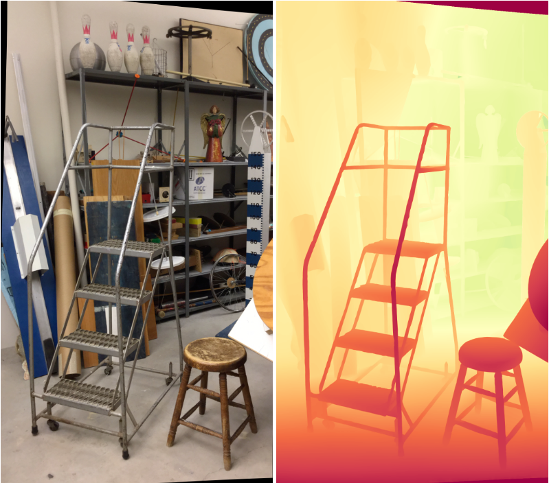
Stereo matching
Zero-shot generalization, glass and mirrors, event cameras, networks that adapt on the fly.
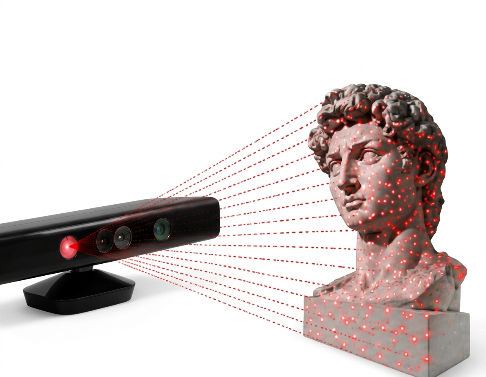
Active stereo & depth sensors
LiDAR, time-of-flight, Kinect-like and structured-light sensors: pattern projectors, active stereo and depth completion.
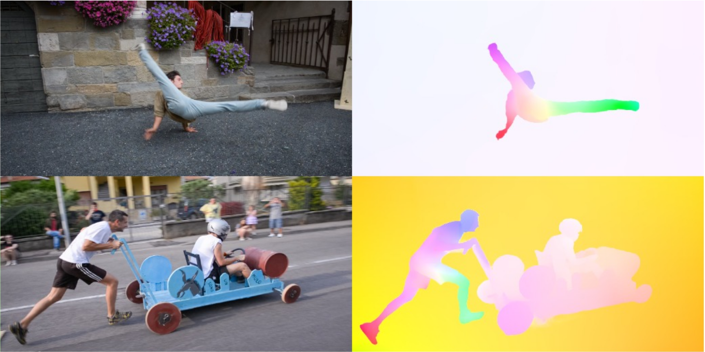
Optical flow & motion
Dense motion between frames: optical and scene flow, with depth foundation models and confidence-guided refinement.
Confidence & uncertainty estimation
Knowing when a depth or flow estimate can be trusted: confidence, uncertainty and reliability for 3D perception.
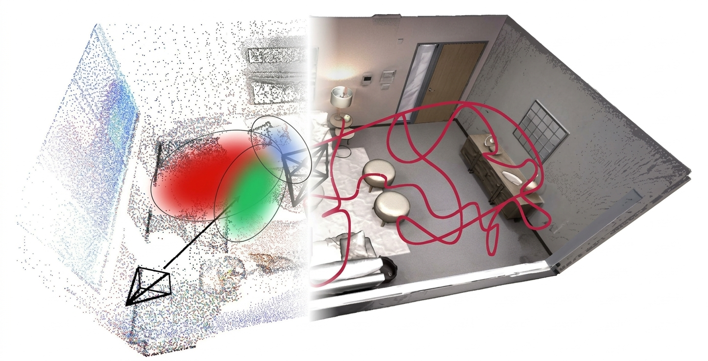
Multi-view, SLAM & 3D reconstruction
Feed-forward reconstruction from casual video, 3D Gaussian Splatting, dense SLAM on top of depth foundation models.
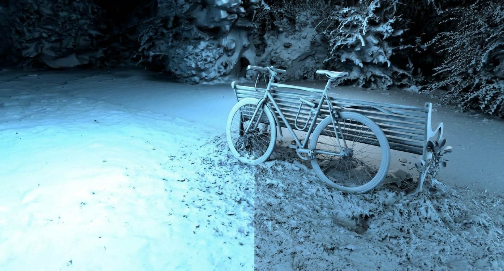
Neural fields & 3D representations
Deep learning directly on NeRFs and implicit representations: classification, retrieval, generation and NeRF-language assistants.
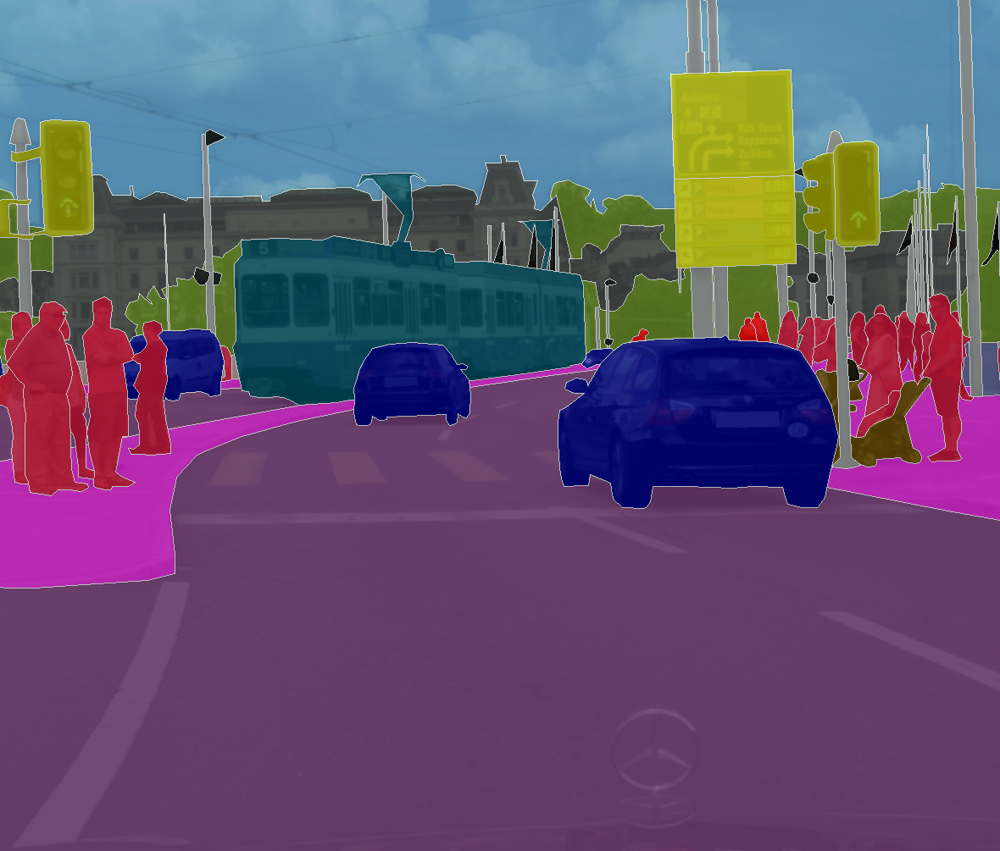
Semantic & scene understanding
Open-vocabulary segmentation, bird's-eye-view perception for driving, 3D semantics on point clouds and reconstructed scenes.
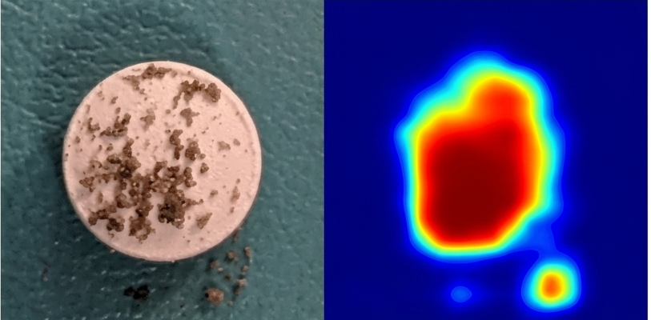
3D anomaly detection & industrial vision
Multimodal and few-shot anomaly detection for visual inspection, benchmarks and lightweight models.
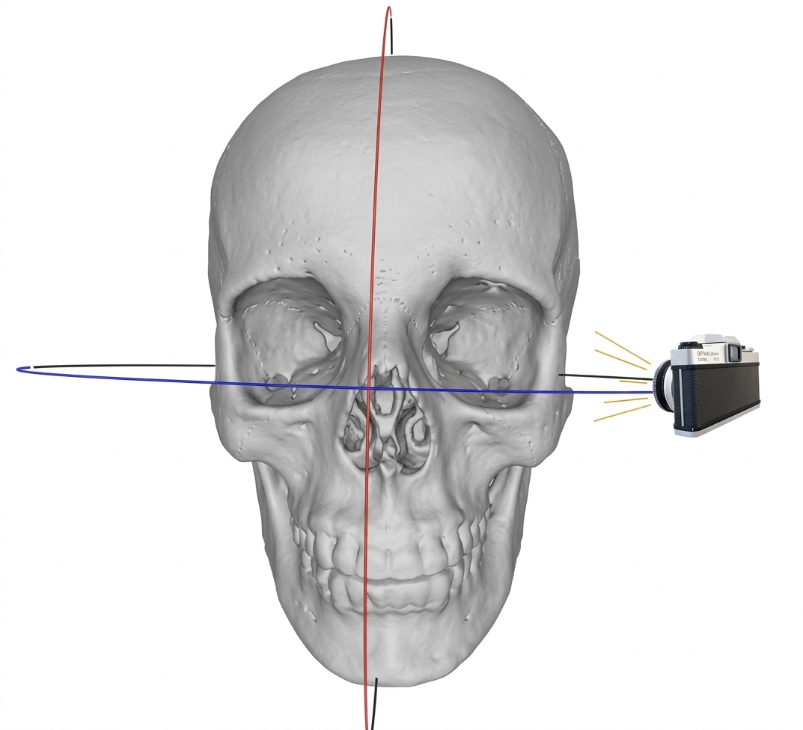
Medical 3D vision
Shape completion and implant generation for cranio-maxillofacial surgery, 3D cephalometric landmarks, synthetic anatomy.
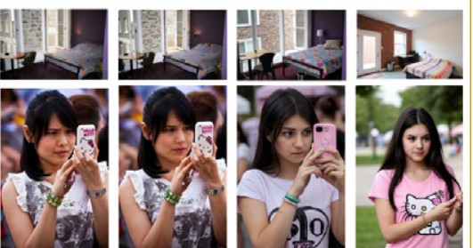
Image synthesis & forensics
Controllable image and face generation, and the other side: detecting generated or manipulated images and protecting real ones.
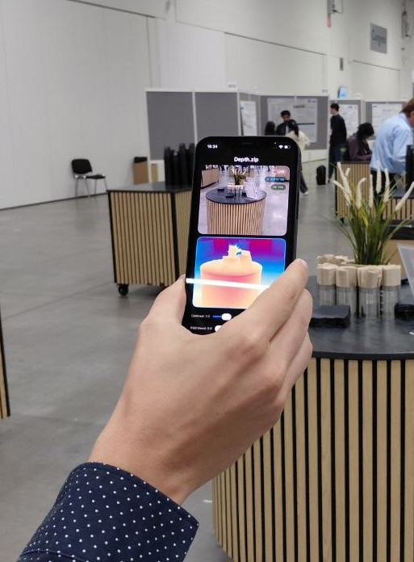
Efficient & real-time vision
Lightweight networks and architecture search, deployment on CPUs, embedded and low-power devices.
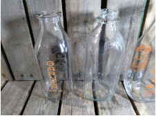
Robust & adaptive vision
Domain adaptation, online and test-time adaptation, self-supervised learning across sensors and conditions.
Vision-Language Models New
What a VLM can and cannot say about geometry, and how to teach it spatial understanding.
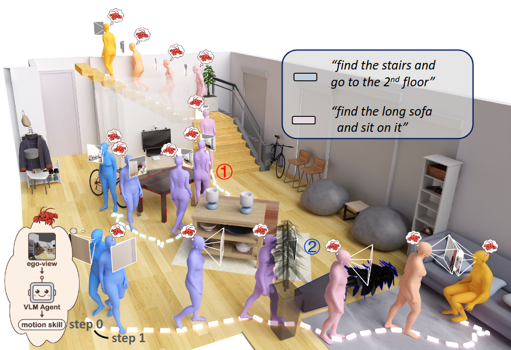
Vision-Language-Action New
How far accurate 3D perception takes a robot policy, and where manipulation still breaks.
- +
Your own idea
Bring a proposal that overlaps with what we do. The list above is not closed.
A period abroad. We collaborate with universities and companies worldwide, and students from the group have already spent research periods abroad. It is not guaranteed, but it is worth asking about early.
PhD & postdoc
Calls for PhD positions and research fellowships are announced on the University of Bologna website. If you are thinking of applying, get in touch with the faculty member closest to your interests before the deadline.
Get in touch
Write to the professor closest to your topic with your CV, your transcript, and a few lines on what you would like to work on. Telling us which of the topics above caught your eye helps more than a generic message.